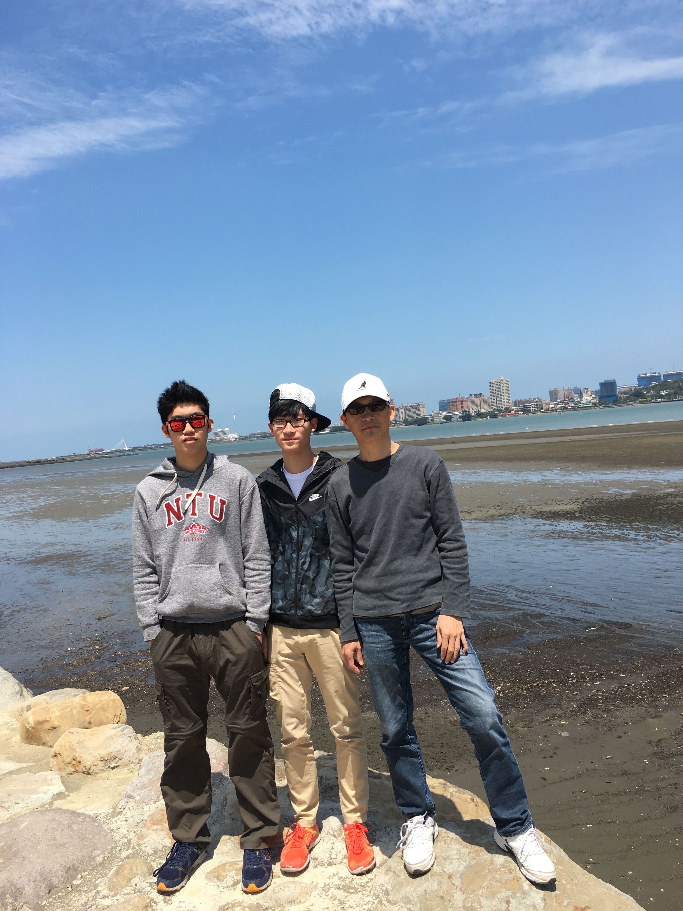
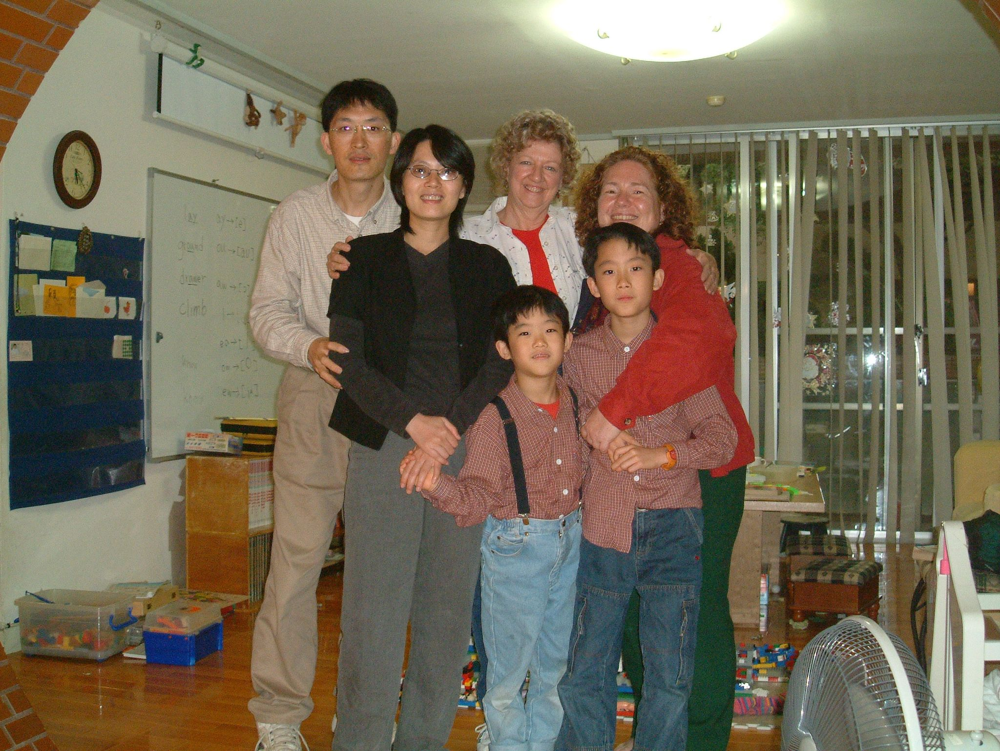
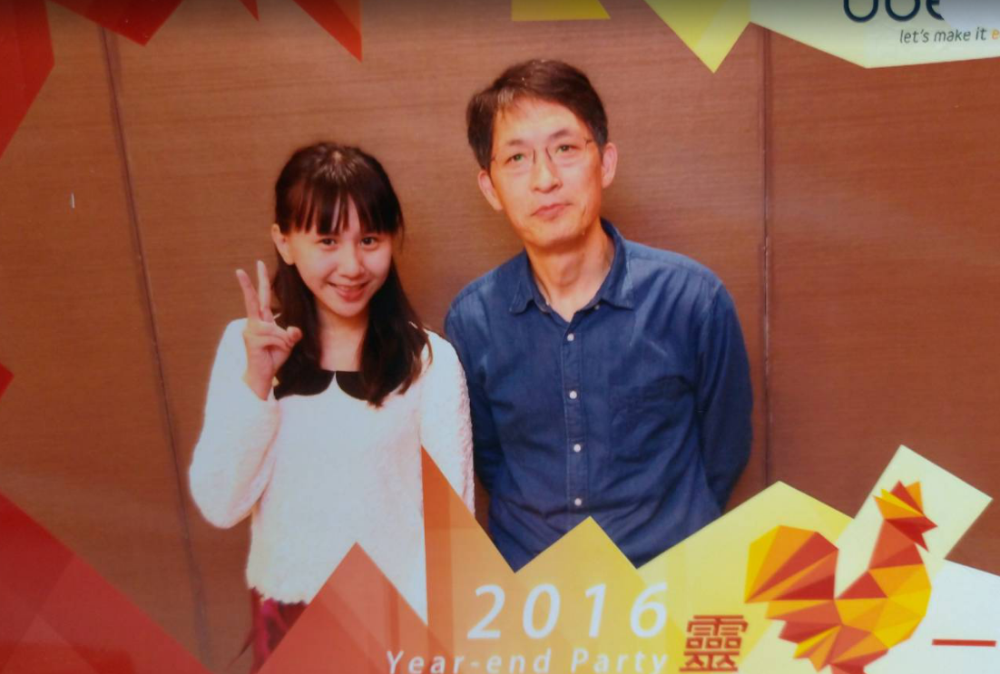

點擊標題即可展開文章
投稿請至an4976887@gmail.com
投稿請至an4976887@gmail.com
我一直都知道你病得很嚴重
雖然你跟媽媽都說你會好,以後要搬去關西住
雖然你還是偷跑了
但是我知道你很辛苦
謝謝你為我們那麼努力
做你不喜歡的工作和忍受治療的痛苦
還記得我每次硬要你跟我擊掌,擊拳
還抱怨你動作做的不夠確實不夠快
從最古老的打勾勾蓋印章,後來到浮誇的黑豹style,到最後瀟灑的fist bump
你走的前兩天，我離開醫院之前我們還有fist bump
我會很想你
特別是在每年生日
但還是會認真練琴啦
也會好好陪媽媽
你的小寶
現在還是有種不真實感，陪伴我們23年的你就這樣離開了。
謝謝你教我做人處事的道理，也謝謝你讓我從小到大不愁吃穿。
我寫不出感人肺腑的文章，我寫了一個網站送你，希望你會喜歡。
我們都很想你，但是也知道你現在在天上已經沒有病痛了。
爸，辛苦了，謝謝你。
愛你的兒子 鄭揚

“我的爸爸”這種小學等級的作文題目，沒想到對今天的我來說，好難寫。
你走後我回首看過去，才發現你多了不起。你在人生的個階段，都為我留下了努力的標竿。我常常在想，如果當年的你是我，大概已經搞砸了，甚至早就放棄努力。雖然我從小闖禍不斷又不聽話，但你總是讓我了解到你對我的愛，也讓我看到一個全心全意為家庭付出的父親，a father that I could never be.
“捷克真的很漂亮，以後帶你跟媽來玩。” 這是我去年在歐洲交換時寫給你的明信片，
“謝謝你寫給我的明信片，我很喜歡。” 這是你收到後傳給我的line。
這些看似平淡無奇，但都是我會一輩子珍惜的回憶。
謝謝你親自為我示範了，如何在人生這場牌局中，用手中有的牌打出最漂亮的結局。
親愛的天父上帝，
今天是小弟英傑離開我們滿六個月的日子，祢深知道我內心深處想說的以及說不出來對他的思念！
天父啊！我們真想念小弟，原來親情的割捨是這麼困難啊！人性最大的軟弱，就是他在的時候沒有好好珍惜，他離開後我一想到他，至今仍是鼻子一酸，熱淚盈眶就是止不住。
天父啊！祢是明白的，這半年對我媽媽來說，老年喪子之痛加上腿傷，她的日子過的相當辛苦。最近疫情很嚴重，她對我說，還好英傑離開了，如果他還在住院的話，他會受更多的苦，其實她說這句話是安慰自己的。
好幾次她像孩子般的語氣問我說：妳説耶穌很愛英傑，那耶穌為什麼不讓他多活幾年呢？
當她聽到別人夢見英傑時，她就會問我，是不是因為她還沒有信耶穌，所以英傑不能在夢裡找她呢？照理說，孝順的英傑沒有理由不到夢裡來見她，因為英傑離開時她連最後一面都沒見到，這遺憾一直在她腦中徘徊。
天父啊！在約珥書2：28～31祢不是說在末日的時候，祢的靈要澆灌凡有血氣的，老年人要作異夢的...我求祢按著祢的憐憫及慈愛賜下一個異夢給我媽媽，讓她在夢中見到她寶貝兒子英傑，讓媽媽知道他在在天上好的無比。
天父啊！求祢幫助我媽媽卸下重擔，免得她每個晚上都要起床5～6次，拿著輔助器，從臥室到客廳來回走動，在靈裡深處，彷彿在尋找他失去的兒子，她不自知。求祢賜給她救恩之福，好叫我媽媽的靈魂體在祢裡面得著安息。
謝謝祢阿爸天父我愛祢！
謹以此歌It is well with my soul記念英傑
記憶裡~英傑就是一個人如其名的人，喜歡幫助別人的英雄豪傑。英俊挺拔的外表.加上能言善道的口才，在工作中一直都能發揮長才，終其一生都認真努力的工作奉獻家庭。如今英傑可以放下一切人間勞苦，開始他另一段旅程，可以了無牽掛無拘無束地四處遨遊，最後會回到天家~阿爸父的身邊。英傑更是一個心思謹慎的人，在決定任何一件事或買任何東西之前 ，他也都會詳細的考慮與比較，也因為他的細心及深思熟慮，所以讓身邊的人都可以放心信靠託付他！
想起我們每一次到英傑家，英傑總是非常好客地在廚房，展現他的廚藝，熱情的盡地主之誼，讓我們都感受到英傑的那份溫暖，家裡面四處可見都是英傑獨一無二的DIY木工作品，以現在忙碌的生活中，已經很少有人會將自己的興趣融入在自己的生活中，還有學習手工皂、烘咖啡豆等、他總是能發揮其所長的實際運用在每一天的生活中、讓我們都感覺得到英傑就是一個非常多才多藝的人才。
上次見到英傑時，他跟我說心裡想做的事情好多，但心有餘而力不足，現在你安息在主的懷裡，你可以放下心，一無掛慮的去做想做的事，孩子們也都很懂事，你可以安心地朝向另一段旅程，也是你另一個生命的開始！願上帝保守你~
邱淑慧
姊夫:
你在那裏好嗎？人家說人生如夢，你大夢初醒，對於這個夢境，應該還是回味無窮吧！？
一直以為你會恢復健康，就像以前幾次一樣。記得我剛退伍來新竹時是在外租房子，有一次半夜接到二姊的電話，你肝病發作，二姊要照顧小孩，要我送你去急診。往後幾年，知道你有時肝指數狀況不好進出醫院，期間甚至有一段時間離職在家休養身體，但是你總能恢復健康，然後回到職場。我知道，為了家人，這次你還是像以前一樣，忍著身體的痛苦持續接受治療，非常努力想要回來，只是，就像你常說的，神自有安排，大家都能夠理解，你無須牽掛，安心地去吧！
我還是時常在周末去飛鳳山運動，當在山徑上費力的一步一步往上攀升，伴隨著喘息和滿身大汗時，最適合想事情了。人生的難題，不見得都能解開，但在此時，卻常能有不同的看法，有時豁然開朗，也就能坦然處之了。當然，現在會時常想到你，我翻了LINE的對話紀錄，我們大概有一年半時間，常在周末晨間一起去飛鳳山運動，也常分享彼此對時事或孩子教養的看法。有時在想，如果我持續不中斷找你出來爬山，你身體的狀況會不會有不一樣的結果？
又是橘子的季節了，記不記得，我們和每年只此季節才能得見的賣橘子老闆和老闆娘聊得很愉快，原來以前飛鳳山都是茶園，芎林街上都是茶行，現在山上變成橘子園，芎林街上罕見有茶行，世事確實變化無常，就像現在，你已經不在，我們只能無奈接受。我還是一樣會在下山後帶一袋橘子回家，下次我會幫你把你那一袋帶回你家給二姊。
對了，你的木工也是一絕，記得你給我看過一個你做的木盒子，作工精細，接合精準，活脫是出自巧匠之手，令我嘆為觀止。後來你還買了車床，聽你說是考慮甚久，好不容易有一筆閒錢，才狠心買下。我們當爸爸的都是這樣，為了滿足家人的需求非常慷慨，對自己的花費卻斟酌再三。
這些年辛苦你了，如今你兩個兒子都長大了，他們會好好照顧媽媽和妹妹，你可以放心休息了。雖說不能看到孩子們成家立業一定會是你心中的遺憾，請你放心，你把他們教得很好，他們都很爭氣，也很優秀，將來一定會很有成就，我們大家都會幫忙照看他們，身為舅舅的我，更會義不容辭。
人生就是這樣，悲歡離合，總是無奈。謝謝你來當我的姊夫，再見了，安息吧。
敬虔愛家的二姐夫:
謝謝您和二姊帶給我美好福音，
在我最軟弱的時刻 ，
讓我看見上帝的愛～
是上帝派來的天使
在我們眼中
您所建造的
是榮神益人的家庭
有許多美好的見證
恩典也是細數不斷
謝謝您讓我們看見神的愛
謝謝您成為我們美好的榜樣
如今，
您脫離了病痛 到天上與天父爸爸同在
是無比的美好
雖然不捨 但我們相信
未來天上會再相聚
淑貞
英傑姐夫
您一貫認真的身影及態度原則，
一直是我心中的模範，
謝謝你～
我在這近20年的人生歷程中，不論是工作的挑戰、信仰的疑惑...，
你總能成為我的引導幫助。
即使在與疾病的對抗中，
你仍不忘你為身邊親友的祝福，
9/16是你最後一次給我咖啡粉，
這當中的心意，我心無限的感動與感謝。
您在醫院的這段期間，
看到你堅強的意志與削弱的身形，
心中萬般的不捨，難以用言語來形容。
在如此極大的困苦中，
您仍活出基督的信仰與盼望，
你是位好弟兄、好姐夫。
現在您在天家好的無比，
我也將這無盡的思念，
化為期盼，未來天家再相見。
平安喜樂
姨丈
這幾年知道您的身體一直不是很好，起初也始終相信，
你能戰勝病魔，事情沒有想的那麼嚴重。
這幾天其實腦袋中一直想起，
只要一有機會就會對我的耳提面命。
我年紀比鄭翔,鄭揚都還要大，
在我尚未工作的時候，
持續為我打預防針，也教了我很多工作上與人生上的思維。
印象最深刻的那次，是你對我說的，
我們要把能力跟實力量化，不要總是回答一些大概或是可能的話語。
比如說這項任務能在3天內完成，抑或是考試考好的機率有80%。
那時候覺得這樣的觀念很好，但並沒有想像中的那樣那麼深刻。
直到我這兩年開始工作，持續不斷地遇到這些溝通以及數量化的問題，
才發現...您那時候說的是多麼重要。
從小到大，對您的印象其實大部分的時候都是，
對於鄭翔、鄭揚和鄭羽的教導，
總是在犯錯的時候就即刻給予指責與教育。
說實在我以前不太認同這種做法，
但現在來看，
鄭翔與鄭揚都那樣地優秀與成熟，
待人處事有禮貌，並且辦事也很有一套。
我才發現，您對於他們小時候的成長乃至於就學與工作上，
都有很深的影響。
我知道阿姨這幾年陪伴著您也很辛苦，
直到最後才知道，
您也一直想要讓自己康復，回到您最珍愛的家庭當中，
但老天爺卻這樣捉弄您，捉弄我們...
失去是很痛苦的，
聽聞最後您決定要讓自己離開，
放下這些生理上的疼痛，
但想必心理上的痛肯定也是莫大的難受...
不管是阿姨或是您，
最後一刻，決定要放棄了...
是要有多大的勇氣才能這樣。
很抱歉...
明明都是在台北卻沒在最後一天前往醫院探望，
因為自己的害怕以及難過的情緒，深陷其中。
但不代表不存在對您的感謝與思念。
快樂家族還是19人，
您永遠與我們同在，
謝謝你...教了我很多事...
也在最後還是教了我
要如何說再見...
岳廷
昨天去見了您最後一面，最後的最後，默默地在心裡跟您說聲再見。
記憶中的姨丈是那種同學都會羨慕的爸爸，長相帥氣、爽朗笑聲、待人和善，還配備精湛廚藝、創意木工等技能，如果有十項全能老爸比賽，您一定名列前茅。
覺得有些遺憾，一年中相聚的次數不多，如果中秋團圓時，能跟您多聊上幾句就好了。
謝謝您用行為和話語成為許多人的生命榜樣，謝謝您和阿姨一起打造了一個美好的基督化家庭，讓我們也有機會認識信仰；謝謝您的勇敢和堅強，謝謝您教會了我們生命的課題。
您辛苦了，如今您已無病無痛，回到上帝爸爸的身邊。姨丈掰掰，我們天家見！
佩旻2020/12/28
親愛的姨丈：
記得小時候還以為姨丈的工作就是當木匠，每次去你們家就發現又多出了一些酷東西，我還記得當時我十分羨慕小羽可以擁有您親手製作的娃娃屋，在還是小女孩的我眼裡根本就是什麼都變得出來的萬能爸爸。之前有兩次的生日禮物都是收到小羽木製的偶像周邊，都是在您耳濡目染以及用心教導之下完成的吧，現在看著這些感覺心裡十分複雜，美好回憶裡不免夾雜著思念。
您在我心裡不止是巧手的木匠，也是個在家庭中不缺席的好父親，才能成就三個非凡的孩子。每次看到小羽黏在您身旁，就感受到你們之間的溫暖與愛，這種親密並不是每個爸爸都能辦到的。
在我心裡的姨丈，永遠都是那個充滿元氣、溫柔風趣的姨丈。我唯一能為您做的，就是盡我全力讓小羽跟我在一起時露出微笑，在她想念您或遇到挫折時抱著她、陪她一起哭，希望您在天上能夠放心，也希望將來能在天上相見。
柔安
英傑挚友,很难过没办法亲自到场送你走完人生的最后一程,所以透过这个语音档寥表思念之情。
我们的相遇在1980年南港工职的年少时光,很幸运地认识了此生最好的朋友,你大我们一岁,个子高瘦,英文好、数学好、篮球打得更好，雀斑脸上天天挂着唯我独尊的自信笑容。我们相邻的坐在教室的最后一排，从此你成为了我最好的朋友，不但常常在课业上给与指导，几乎每周六中午放学就带我去圆山饭店侧边的羽毛球场打球，留下了愉快美好的时光。
春假期间带我和你一起回蘇澳老家，见到了慈祥和蔼又热情的郑伯伯郑伯母（虽然常常听不懂浓浓乡音的意思），还有劳烦煮得一手好菜的大姐照顾了我们的饮食，吃到了丰盛美味的三餐。第一次在蘇澳海边附近的土地上看到一支支孤挺挺的野百合，面对海风的吹袭依旧美丽地盛开着。
那天看到郑翔发来你不幸因病过世的消息，简直无法相信这个残酷的事实，瞬间眼前回到了当年开着车子和冬生哥陪着你去板桥迎娶大嫂的画面，你这个英俊潇洒风度翩翩的新郎官同学，怎么这么厉害能娶到如此优质地终身伴侣，令我羡慕不已。随着孩子的出世成长，我带孩子和你的两个儿子在科学园区宿舍的户外尽情游玩，这些情景历历在目。
2020年初回龙路边的短暂见面，没想到竟成为你我此生的最后一面，40年的交情，此生最好的朋友居然就这么天人两隔了，最后特别感谢1984年对我的特别帮助，让我能威震南台，成为一个大专生，改变了我的后半生，这份恩情只有永记于心，在来世再报答你了。一直以来都不相信你的肝病有多么地严重，没想到这么多年的努力治疗与保养，仍然是碰到这个令人无法接受的结局，让我痛心了好久好久，哭了好几天也换不回你的一句“王老五…….”。只能等待到2021年中返台，再到你的安息之地悼念。
郑伯伯郑妈妈大姐二姐三姐和冬生哥及嫂子一家人，希望大家都能节哀顺变，好好照顾自己，英傑的好永远都会在大家的心中留存的，他应该已经受到神的指引，到达了美好永恒的天国。希望自己百年之后能有幸在美好的国度与你相遇，继续我们兄弟的情谊。
40年挚友 王人愚 悼念
I first met Tony and his family in 2004 when Caleb was 5 and Feather was 3 months old. I was to start teaching Bible studies and English starting in August of 2005. They took me in as their Grandma and gave me a family to belong to for 8 years. It was wonderful to belong to such a warm, loving family, to share meals with them and see them on a weekly basis, to see the kids grow.
Tony was a warm, loving man, not just toward his family, but toward others outside the family. He was a great friend who would do anything to help. Tony and Jane would invite me out with them to other activities, and I enjoyed all of it so much. Tony even invited me several times to go camping with the family, but I wasn’t sure if a 65 year old woman could still sleep in a tent on the hard ground. I finally went and enjoyed camping in my old age. Thank you, Tony!
I enjoyed watching Tony every week, how he interacted with his kids, how he was always fixing things and building things and designing things. I think Tony got a degree in the wrong thing. He should have been an artistic designer of some sort. He was artistic and loved making things.
Tony was so loving and kind and sharing; he and Jane went out of their way to make me feel loved and needed. I truly felt like blood kin. Titus, Caleb and Feather grew up thinking of me as part of the family.
Tony would contact me once in a while when he saw me online just to see how I was after I moved back to the US. I will miss him so much. He was a great man and a wonderful example of what a Christian man should be.
I want to make a charge to Titus, Caleb and Feather to step in where Tony left off. Be there for your mother, contact her often, keep her informed of your activities. It will be lonely for Jane without Tony, and her heart will be so warmed and encouraged with visits and calls from her children as she grows older. She may have sisters and close friends, but no one can replace you kids to keep her happy.
Love you all. Thank you all: Jane, Titus, Caleb and Feather. You have been the best family anyone could have.
Eve Quave
January, 2021

望著家裡不小心摔斷的椅背，
知道若是你仍健在，那雙巧手就必然在修復以外帶來驚喜，
因為你在地上有著和耶穌相同的副業。
在我們人生下半場重新起步的時刻，
你時常在我們身邊，用雙手支持我們。
診所中大大小小精緻的手工木作——
散佈在各個角落，留著你的氣息與風格。
你巧手改造咖啡烘磨的機器，為需要的人烘製咖啡，
有太多時刻，我們讚嘆你的巧手巧思。
永遠難忘那一年，我們第一次一起過生日，孩子們與慕真夥伴的表演與祝福，令我們一同欣慰落淚。
與錚宇同年同月同日生的你，
是上帝給我們家的珍貴禮物。
在家自學的路上，
我們一起過生日、話家常、露營釣魚、騎腳踏車、賞流星雨、在農地上勞動、穿著大衣在寒冷的高山燒烤做餐、走過人生無數個歡笑與淚水。
最令人感動的，還是你對上帝、對家庭、對弟兄的愛。
聽著你訴說在信仰上的經歷；
描述陪伴憂鬱症弟兄的經過與惋惜；
以及目睹你在日常生活裡對妻子、兒女及父母關愛的言語及舉動。
親愛的英傑，
我們除了思念，就只能不住地感恩，
為著你曾為我們所做的一切，
為著你在病痛中對神的敬畏與信心。
相信神始終心滿意足地看著你，
從人間到天上。
錚宇慧雯
那是八月底的事。
我問英傑可以將他的病情告訴我，請理監事們為他代禱嗎？ 他用Line回我：「好的，如果不麻煩的話。我目前在台北榮總，預計這個週 末或下週出院，我可能沒有辦法一一回覆他們的關心。你覺得呢？」 這就是英傑令人感懷的地方，他總是先為別人著想，看重他人的感受。 認識英傑十餘載，一同在慕真服事。 他話不多，卻能誠實表達他的想法，而且明確具體。 他會溫和的直接說：我有不同的看法，你聽聽看。 於是，我就知道我忽略了什麽。英傑是身體力行的實踐家，尤其是他承諾的事，必定投身其中，絕無二言。
我印象中，慕真的理監事和會員大會，他不但出席，還常常協助場地佈置和整理；再忙，也要在會後趕來幫忙扛桌椅。好幾屆的約書亞少年畢業典禮他也來湊熱鬧，他說：你都從台北過來了，我當然也要來，而且多一個人的掌聲給孩子們鼓勵是應該的。他的手工藝更是展現了他心思的細緻。 他說是為退修預備的。 但是，道具齊全且作品的成熟度已經可以定價了。 我倒是先享用了他的無毒香皂一兩年，而養成了使用香皂沐浴的習慣。 他心中常掛念妻子和三個寶貝孩子，他老是覺得他不擅長對他們表達心中的愛，只能多花時間留在家中默默的陪他們。我說：兄弟啊！你可是用生命來愛他們，而不是假手物質來應付他們，你可是用為昂貴的方式了！他微笑道：我也只會這樣做。 兄弟，你已經把自己給了家人，把生命榜樣留給了我們，這一趟人生旅途 有你同行，真的夠好。
黃夏成
溫柔如旭日般的英傑
是慕真自學圈的暖男老爸
你用最大熱情接待來自遠方的住宿家庭
一直以來露營、騎車、爬山、健行、開墾…
都是你帶著孩子們一同參與且樂在其中
親朋圍坐包春捲更有來自浙江人家族的承傳
採購專業的你從不吝惜分享優惠訊息
你有一雙木工巧匠的手
在你家中處處可見實用的木質藝術創作
你充滿耐心、細心研磨咖啡豆
在飄香中無私分享你的黃金咖啡粉
神是愛
在你所及之處環繞
英傑，我們非常想念你
願神繼續將你的溫暖存留於眾人心中
方盛．雪冰2020/12/20
聽到英傑回到天家的消息，令我感到錯愕、難過、遺憾，因為我在這世上損失了一位好友，慕真也損失一位忠心的常務理事。一個月前英傑才跟我約好病好以後要請我到家裡喝咖啡，英傑離開的消息一時間讓我覺得很不真實….
剛認識英傑是在十幾年前慕真的營會中，我們成為在家教育孩子這一條路上的夥伴，偶而需要一些在家教育的資源時，英傑都很友善地與我們家分享。更多認識英傑是在近5-6年來我們在慕真擔任常務理監事，一起同工或開會。每次要開會的時候，不管英傑在哪裡，總是會盡力參與，即使當天白天上班忙碌，也會預先告知狀況，晚上儘量趕回家在線上開會。約定好的事，總會牢牢放在心上，負責任的態度，不在話下。記得今年九月最近的一次常務理監事會議，當時英傑身體已經很不舒服，仍盡力想要擠出一點體力參與會議，讓我很感動。
英傑支持同工或關心慕真事務的方式，常常讓人覺得很窩心，不管是前任建松或現任的我當理事長時，常默默在背後用實際行動來支持。舉例像遇到有些事情需要做決策或開會前，我幾乎都會先接到他的電話表達一些看法，即使在白天上班時間中，也會找空檔打電話。他的意見很中肯，並且讓人感到被支持，扮演非常棒的同工。
印象深刻的一件事是夏成、慧媛于2017年9月在高雄辦研討會，當時建松理事長受邀做開場白。英傑率先表示會隨建松一同前往高雄，英傑特別請一天假用行動表示對慕真活動與理事長的支持，搭第一班高鐵南下，當天下午返回。二年前理監事改選前，英傑曾跟我誠懇地表示，他覺得不配繼續當慕真常務理監事，想婉拒這個職務，因為他覺得他沒有做什麼事，也怕砸了慕真的招牌。我跟他說，怎麼會呢？我不可置信他有這種想法，但我後來明白這對一個負責任、愛團體名譽過於自己的人來說是自然會有的想法。九月初我在LINE上問候他，他除了謝謝我之外，回覆我說，『一直沒有能夠成為你得力的助手，我很抱歉』，『從去年8月手術後，不到半年時間又復發 都沒法幫到你什麼事，希望趕快恢復健康，能多少做一些事，謝謝你的體諒』這就是英傑，富有責任感，顧念別人的需要，帶給人溫暖，默默給人支持的好弟兄。
康維(現任慕真理事長）
2020.12.23
英傑:
我們是因著實行在家自學才彼此認識的。
有次在我們家聚會，你帶著淑娟與女兒一起來，不巧女兒身體有些不舒服，雖然你與我們有些分享，但是肢體語言與神情，仍然一直集中在女兒的身上，而且選擇就坐在女兒的身邊，好方便照顧。你們離開之後，我們夫婦才發現原來你如此柔情的一面。後來女兒漸漸長大，在一次獻詩的聚會她擔任指揮，我們在觀眾席坐在一起欣賞演出，看見你的笑容與帶有些靦腆的表情，一切盡在不言中。作為一位父親，好生羨慕這樣的親子關係。
作為在家自學的夥伴，幾次開會議題的討論，除了邀請我們到家中品嘗你的手沖咖啡，在過程中認識你的真與對事件的執著。不僅如此，你還特別請假陪著我們到高雄參加自學的講座，看見你的熱情助人與幽默風趣。
現在暫時分開，將來還要再見面。等你邀請喝咖啡。
建松
最近才聽到關於你的消息，心中非常不捨與難過，好久沒見到你，一直認為你正在積極治療中，所以也沒太多打擾，一方面為你代禱。一方面期待能聽到你康復的好消息，就像上次手術一樣順利，沒想到現在再也見不到了，幾個月前到你們社區接孩子時的見面閒聊，竟然是最後一次談話，真是令人心痛，也難過沒有來得及關心問候你。
在過去相識的十幾年時間，因著孩子彼此熟識的關係，有許多的交流互動的機會，有時是在慕真營會的場合中，有時是到你們家中做客，有時是相約帶孩子到海邊抓魚，有時是在理監事會中，有時是在教會偶遇相約吃飯的場合，慢慢地越來越認識你，覺得你是一位對人誠懇，愛主，在許多服事上都忠心擺上的弟兄，也看重家庭，愛妻子愛孩子，把許多的時間都留給家人，在主裡真是一位被神重用的好弟兄。
曾幾何時，那些和你的談話中，給了我很多啟發和幫助。
那些關於如何自學，如何培養孩子學習能力的方法。。。
那些關於如何在公司做一個基督徒，為主做見證。。。
那些關於弟兄的難處，爸爸的難處。。。
那些關於教育體制的框架和限制。。。
那些關於生命勇士的經歷。。。
那些見面時的寒喧，爽朗的笑聲，總是想逗小孩的童心，還有偶發傷感時的苦笑。
都深深恪印在我心裡。
還記得之前有相約要一起去爬飛鳳山，可惜一直沒機會成行，以後也沒機會了，只能期待將來相約在天國相見了。
主內 冠廷品妃
2020/12/23
坐在同樣的位子參加聚會，依稀覺得英傑也在熟悉的位置，不過今天，座位是空的。
我們認識的英傑沉靜寡言丶溫和謙遜丶心細手巧，崇尚自然。愛家愛孩子，看重與家人相聚的時光，選擇在家教育，常見英傑帶著全家露營丶爬山丶從事戶外活動。凡事喜歡親身體驗丶動手做，家𥚃有一間工作室，陳設各類工具，匠心獨具的創意設計，令人難忘。
何其有幸，得其手作相贈，樸實無華的木刻手作，握在手上，物如其主，感受到的是無聲的問候及一份濃情厚意的關心。
病痛提醒英傑小心地生活，但這分離的時刻，仍在大家都未準備好時，驟然來到。
英傑息了地上的勞苦，現在他的座位在天家，與父同坐席。
求主抹去家人親友一切的眼淚
盼望主復活的榮耀降臨
在未來，與英傑再見
健興，靜姍
在生命中能認識英傑與淑娟一家人，是一件美好的事。因著曾經與英傑和淑娟在伉儷、愛加倍團契一起服事的時光，我們有幸走進英傑與淑娟的家，與他們成為生活中真實的弟兄姐妹。我們所認識的英傑，是一位工作認真的弟兄、疼愛妻子的好丈夫、陪伴孩子成長又愛孩子的好父親。
每當有機會拜訪英傑與淑娟芎林的家，一踏進門，就可以感受到英傑與淑娟家中愛的氛圍；從家中的英傑手做的桌子、椅子、書架、十字架…，桌上所擺的書籍、孩子們的遊戲、食物中，都使我感受到英傑與淑娟真誠謙卑地使用神所賜的一切，認真過每天的生活。有一種細微的感動，是在英傑與淑娟生活中看似平凡的小事中散發出來的，這是英傑與淑娟生命的故事，成為身邊的人褔音的見證。
曾經聽淑娟提起過，英傑會出人意外的讚美妻子，也常在家中的餐桌上與孩子們分享工作上的挑戰與經歷，藉此引導孩子們如何有神的眼光與價值觀，又有智慧在真實的生活中活出來。
英傑是一位善於傾聽的弟兄，每當有機會和他談論事情，他總是細細的聽，而後給出智慧的看見。另外，英傑非常喜愛手做，很能自得其樂、善用時間、經營自己和家庭的時光，成為孩子們與弟兄姐妹的榜樣。
心中很不捨英傑如此年輕就離去，求愛我們的天父，讓我們看見英傑在世上的美好腳步，並將一切獻給上帝。
願上帝在淑娟和孩子們的悲傷中賜下安慰。
願上帝賜淑娟和孩子們一片堅實的心土， 可以安穩立足。
願上帝像大衣一樣保護淑娟和孩子們、擁抱淑娟和孩子們，
讓淑娟和孩子們在悲傷中感受到被愛所環抱。
願上帝的愛同時與英傑同在，相信他現在已經在上帝永恆的祝福裡了。
願上帝的雙手永遠在旁邊護佑淑娟和孩子們，
願淑娟和孩子們隨時能夠躺臥在上帝的懷抱中。
願淑娟和孩子們吸進上帝的力量和安慰。
願淑娟和孩子們吐出內心的傷痛。
願上帝的祝福進入淑娟和孩子們的內心，將淚水轉化成感恩、
轉化成喜樂，為了英傑和家人曾經一起共度的每一個日子。
翁國曜、張婷如、翁敏恩、翁上恩
與Tony結識超過30年。何其有幸，在前10年及他工作的後8年，我們都工作在一起。謝謝他這18年與我共度酸甜苦辣的職涯歲月。這期間培養的默契，相互掩護及尋求支援來解決問題的能力，非這18年的功夫無以成就。
Tony的家庭經營、小孩教養、生活上的知識、興趣培養以及虔誠的信仰，讓我無法望其項背，亦令我佩服不已。三個小孩都是在家自學，兩個兒子同時由頂尖大學的最熱門科系畢業。我曾玩笑話對他說「歹竹出好筍」，言談中我深知他頗以三個小孩為榮。這得賴Tony及太太無比的恆心毅力方可達成。
他廣泛涉獵木雕，咖啡豆的挑選及烘焙，以及預防醫學常識的培養，都大大的豐富他的生活，透過他的經驗分享，讓我受益良多，我想他的朋友同儕亦都有同感才對。Tony虔誠的基督教信仰，體現在待人接物的謙卑、助人及分享，使我們很容易親近他，尋求他的幫助。他亦常常藉著禱告，為朋友同儕獲得心寧的慰藉及依靠。
他今日息了地上的工，歸於主懷，心中萬分不捨，他是我的好夥伴、好朋友、好弟兄，有天我們要相遇在天家。在此深深求告施憐憫又有恩慈的耶和華，賜福他的父母安康，兒子能擔起父親的責任，照顧母親和妹妹。Tony的家是蒙福的家庭，願主祝福他的後裔生養眾多，如同祂所應許亞伯拉罕的。
在至高之處，榮耀歸與神！在地上平安歸與他所喜悅的人。(路加福音2:14)
游基勳 12/23, 2020
Dear Tony 大哥，
雖然相處時間不多，我也不在您麾下，也常被你唸，但有事情時您總是會默默的伸出一把手來幫忙。
對於您的離開，除了惋惜，還有更多的不捨。
感謝您這段時間的相助，您的好溫暖了我，讓我跌倒時更有力氣的站起來。
謝謝您！
Thanks & Regards,
Reggae
真的感謝您過去9年多在Ubee 帶領OPN的日子
您總是忙錄，但還是會特別花時間關心我們
不只是關心工作上的狀況，還會特別關心我們的生活
我工作經歷少，但您還是會願意靜下心來聽聽我的想法
常常教我很多知識，常常跟我分享工作上的經驗
不只工作上還有人生態度上，我真的學習到很多
真的很榮幸也很開心我們能在Ubee 一起工作
Ruby

Hi Tony,
真的千萬般不捨得讓祢離開我們,
雖然跟祢共事不到半年,
但是從祢身上學到的似如10年所習.
祢對子女的教養方式猶如主的愛般無微不至,
祢的人生歷程是那麼的自主而精彩.
在工作上不求權位只在乎能否替公司創造更大利益,
並且能適時扮演同事間的潤滑劑避免衝突.
真的千萬般不捨得讓祢離開我們,
只能說服自己祢已蒙主恩召,
完成了世間的旅程榮歸主懷,
讓大家得以緬懷祢留下來的一切 ~
無限地 愛 感恩 !
祢口中的老人家 Sam
你在Ubee當了我9年的老闆! 居然在我還因為疫情困在加拿大時, 先上天堂當天使去了! 記得我給你，和我們部門的姊妹們，都已經準備好禮物了嗎? 還有，你真的還欠我很多杯珍珠奶茶! “你是來公司交朋友的” 我覺得這應該是9年來你最常跟我說的一句話了吧…
我想這句話的典故應該是當時在台灣我開一輛BMW上下班，感覺錢多不缺。在公司我總是不遺餘力的據以力爭，跟老闆也都一樣很冲，一副從不擔心自己會被開除、丟飯碗的樣子。這麼多年了，我想好好說一下... 我工作是為了$$$啊！開所謂的名車其實就是年少輕狂。我不是啃老族，當然也是要自己賺錢付房貸、養小孩的。雖然我很常討人厭，但我知道我應該不會被開除，因為我確實認真，我收到的是正面的評價。話說，交朋友是次要目的。我喜歡熱鬧，工作之餘，我會號召大家開開心心地聚聚、吃吃、喝喝。我出國前，我們還一起去石滬玩水、抓魚。我兒子還記得那時有個好心的阿伯借了網子給他用，還帶著他在魚聚集最多的出水口玩。不管是吵吵鬧鬧，還是嘻嘻哈哈，都是滿滿的回憶！
你有很好的個性跟休養！ 其實你跟我說的很多事我有聽進去，可惜事情一來，全部的耳提面命都被我拋在腦後⋯ 我會嘗試改改自己的脾氣。你手作送我的手機座跟吊飾都有被我打包，陪我來到了加拿大。看到時，我就會想起你!
我會一直想念你的！
Jessie
謝謝你亦師亦友給予我們的指引
謝謝你如兄長般給予我們的包容
謝謝你為我們展現何謂堅毅與勇氣
謝謝你即使辛苦,也笑著鼓勵我們
謝謝你出現在我們的生命中,與我們同行一段
我們愛你,思念你,記憶永留心中
From Rachel
Hello Tony,
你在天堂好嗎? 我們始終殷殷期盼你能回來再次一起並肩作戰, 但終究你還是離開了, 雖然心中有萬般的不捨, 至少, 你可以不用再受到病痛的折磨了~ 這些年一起共事的日子, 酸甜苦辣各種滋味都有, 謝謝你包容我們在工作上曾經有過的衝突, 也感謝你在我工作上遇到棘手的問題時, 總是耐心的指導我應對辦法, 在工作以外, 你也總是不吝於分享你的人生經驗, 包括保健知識, 育兒觀念, 手做興趣等等的, 你都能夠侃侃而談, 讓我們如沐春風, 獲益良多!
此刻, 你雖然已經不在我們身邊, 但是過往的點點滴滴仍舊會一直留存在我們心裡, 也祝福你的家人, 此後可以得到你的精神及力量的滋養, 過著平安, 健康, 喜樂的日子!
From Candy
Tony 是位個性很好的同事，每次跟歐洲人因為公事吵架吵到不行，還是會很有耐心的溝通。Team member遇到疑難雜症，你也都跳出來扛，是位好老闆! 謝謝你很熱心，跟我們分享你種的水果還有迷迭香。很抱歉，12月初時，一直想說要去看你，又怕打擾你休養，沒想到上帝這麼快帶你回天家，真是很捨不得。相信你回到天家，沒有病痛，一切都好。也希望上帝能安撫淑娟和孩子們的心情。
Ubee Taiwan – Vivian
Although it is really very sad news to hear, I am grateful to have to know Tony and to have worked with him. I really valued the time I have worked with him.
My sincere condolences to his family.
Ubee Europe – Diana
Thanks for letting us know. That is so sad.
I only met Tony through Skype but he always seemed to be a very nice man.
My condolences to his family and friends.
Ubee USA – Jorge
I am saddened from this news. I was fortunate to meet him in Taiwan. I hope Tony rests in peace and my condolences to his family.
Ubee USA – Alvaro
大家都說，天堂是好的無比的地方，這點我清楚，可是我就是希望英傑哥在我們當中，好想念他....
知道英傑哥離開後，我夢好幾次，原來是誤傳啦，眼淚白流了，參加追思禮拜後，我才相信...
去過英傑園區的家、芎林的家，每次回來就很震撼，這是基督的家，家裡的每個成員都讓我羨慕與敬佩，上帝所造的真是美好，家裡每一分子都很努力的讓家裡更美善。
之前不懂，為什麼英傑這麼會安慰人，跟他說一些苦難，他總是聽的懂，安慰人可以這麼深入，很感謝他，跟我聊自學、聊孩子的學習、孩子的病痛，還有手工皂...
謝謝上帝把這樣美好的家庭帶入我的生命裡，更新我，建造我！神一定會更加愛迎接所愛的淑娟、鄭翔、鄭揚、鄭羽，失去的，由我們的主耶穌基督，親自代替。